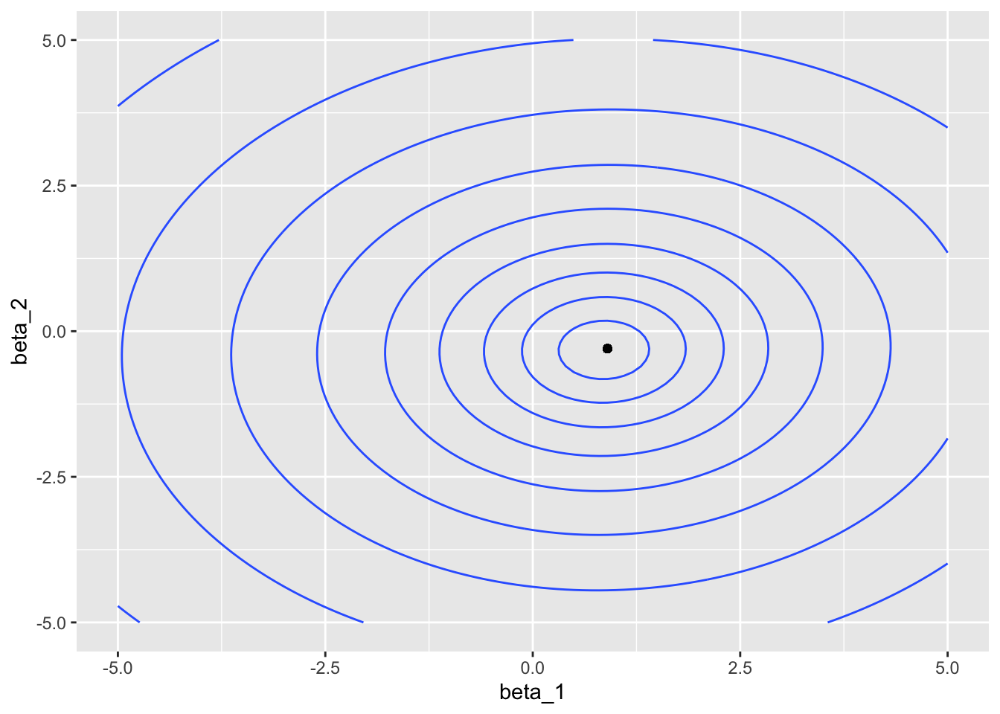

library('tidyverse')
set.seed(1)Gradient descent
R
n <- 200
beta <- c(0.8, -0.3)
X <- matrix(nrow = n, ncol = length(beta),
data = rnorm(n * length(beta), 0, 4))
y <- X %*% beta + rnorm(n, 0, 3)
fm <- lm(y ~ X - 1)
summary(fm)
Call:
lm(formula = y ~ X - 1)
Residuals:
Min 1Q Median 3Q Max
-9.0310 -2.1055 -0.2301 1.9095 11.2183
Coefficients:
Estimate Std. Error t value Pr(>|t|)
X1 0.85705 0.06124 13.995 < 2e-16 ***
X2 -0.32103 0.05629 -5.703 4.24e-08 ***
---
Signif. codes: 0 '***' 0.001 '**' 0.01 '*' 0.05 '.' 0.1 ' ' 1
Residual standard error: 3.212 on 198 degrees of freedom
Multiple R-squared: 0.5391, Adjusted R-squared: 0.5344
F-statistic: 115.8 on 2 and 198 DF, p-value: < 2.2e-16calc_log_likelihood <- function(beta_1, beta_2) {
beta_hat <- c(beta_1, beta_2)
# print(beta_hat)
# cat('\n')
# return(NULL)
y_hat <- X %*% beta_hat
epsilon_hat <- y - y_hat
sigma_hat <- sd(epsilon_hat)
dn <- dnorm(epsilon_hat, 0, sigma_hat, log = TRUE)
return(sum(dn))
}
calc_log_likelihood(coef(fm)[1], coef(fm)[2])[1] -516.1865logLik(fm)'log Lik.' -516.1859 (df=3)dat <- expand_grid(beta_1 = seq(-5, 5, by = 0.1),
beta_2 = seq(-5, 5, by = 0.1))
dat$loglik <- map2_dbl(dat$beta_1, dat$beta_2, calc_log_likelihood)
ii <- which.max(dat$loglik)
middle <- dat[ii, ]
dat |>
ggplot(aes(beta_1, beta_2, z = loglik)) +
geom_contour() +
geom_point(aes(x = middle$beta_1,
y = middle$beta_2),
inherit.aes = FALSE)
Example from r-bloggers
- Source: Link
attach(mtcars)The following object is masked from package:ggplot2:
mpggradientDesc <- function(x, y, learn_rate, conv_threshold, n, max_iter) {
plot(x, y, col = "blue", pch = 20)
m <- runif(1, 0, 1)
c <- runif(1, 0, 1)
yhat <- m * x + c
MSE <- sum((y - yhat) ^ 2) / n
converged = F
iterations = 0
while(converged == F) {
## Implement the gradient descent algorithm
m_new <- m - learn_rate * ((1 / n) * (sum((yhat - y) * x)))
c_new <- c - learn_rate * ((1 / n) * (sum(yhat - y)))
m <- m_new
c <- c_new
yhat <- m * x + c
MSE_new <- sum((y - yhat) ^ 2) / n
if(MSE - MSE_new <= conv_threshold) {
abline(c, m)
converged = T
return(paste("Optimal intercept:", c, "Optimal slope:", m))
}
iterations = iterations + 1
if(iterations > max_iter) {
abline(c, m)
converged = T
return(paste("Optimal intercept:", c, "Optimal slope:", m))
}
}
}
# Run the function
gradientDesc(disp, mpg, 0.0000293, 0.001, 32, 2500000)
[1] "Optimal intercept: 29.5998515177117 Optimal slope: -0.0412151089930703"